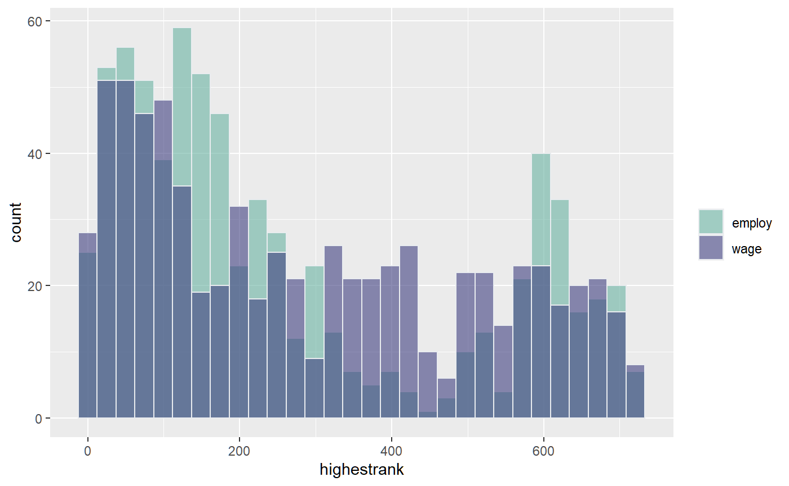

Wage and Employment Comparison Binary Allocation Lalonde Training Example
Source:vignettes/ffv_opt_sobin_rkone_allrw_training.Rmd
ffv_opt_sobin_rkone_allrw_training.RmdTest binary allocation queue with Lalonde training dataset. There are 722 observations, 297 in the treatment group, 425 in the control group.
Already completed optimal ranking analysis and regressions for wage and employment. Here, I combine the results together and generate some joint graphs analyzing:
- The relationship between expected probability of employment and wage (\(A_i\)) without training, and the expected return to training for employment and wage (\(\alpha_i\)).
- For each individual, does their optimal allocation ranking change under the Rawlsian to Utilitarian planner? For wage vs employment based rankings
- Who are those ranked in top 10 to receive? Along the spectrum
- Resource Equivalent Variation along the spectrum
Merge the Wage and Employmennt Rsults
Generate four categories by initial height and mother’s education levels combinations.
spt_img_save <- '../_img/' spt_img_save_draft <- 'C:/Users/fan/Documents/Dropbox (UH-ECON)/repos/HgtOptiAlloDraft/_img/'
# Load Data data(df_opt_lalonde_training_employ) data(df_opt_lalonde_training_wage) # dfj, dataframe joint dfj <- df_opt_lalonde_training_employ %>% left_join(df_opt_lalonde_training_wage, by = 'id') # drop the .y variables, clean the .x out dfj <- dfj %>% select(-contains(".y")) %>% rename_at(vars(ends_with(".x")), funs(str_replace(., ".x", "")))
## Warning: funs() is soft deprecated as of dplyr 0.8.0
## Please use a list of either functions or lambdas:
##
## # Simple named list:
## list(mean = mean, median = median)
##
## # Auto named with `tibble::lst()`:
## tibble::lst(mean, median)
##
## # Using lambdas
## list(~ mean(., trim = .2), ~ median(., na.rm = TRUE))
## This warning is displayed once per session.# order and organize variables dfj <- dfj %>% select(id, starts_with("A_"), starts_with("alpha_"), starts_with("beta_"), contains("rank"), contains("rho"), everything()) # treatment column to numeric dfj$trt <- as.numeric(dfj$trt) - 1 # Summarize str(dfj)
## 'data.frame': 722 obs. of 92 variables:
## $ id : int 1 2 3 4 5 6 7 8 9 10 ...
## $ A_i_employ : num 0.647 0.849 0.65 0.565 0.682 ...
## $ A_i_wage : num 4.71 6.84 4.37 4.13 4.19 ...
## $ alpha_i_employ : num 0.0943 0.0381 0.0938 0.0795 0.0882 ...
## $ alpha_i_wage : num 0.454 0.454 0.454 0.454 0.454 ...
## $ beta_i_employ : num 0.00139 0.00139 0.00139 0.00139 0.00139 ...
## $ beta_i_wage : num 0.00139 0.00139 0.00139 0.00139 0.00139 ...
## $ rank_min_employ : int 188 682 195 260 367 462 367 431 646 503 ...
## $ rank_max_employ : int 2 620 9 3 114 185 114 155 597 294 ...
## $ avg_rank_employ : num 75.9 662.5 84.6 113 225 ...
## $ rank_min_wage : int 386 689 274 178 207 483 207 496 545 496 ...
## $ rank_max_wage : int 278 673 159 61 90 399 90 413 495 68 ...
## $ avg_rank_wage : num 350 684 232 132 162 ...
## $ rho_c1_rk_employ : int 2 682 9 260 114 462 114 431 646 503 ...
## $ rho_c2_rk_employ : int 2 682 9 260 114 462 114 431 646 503 ...
## $ rho_c3_rk_employ : int 2 682 9 260 114 462 114 431 646 503 ...
## $ rho_c4_rk_employ : int 2 682 9 260 114 462 114 431 646 503 ...
## $ rho_c5_rk_employ : int 2 682 9 256 114 462 114 431 646 503 ...
## $ rho_c6_rk_employ : int 2 682 9 256 114 462 114 427 646 503 ...
## $ rho_c7_rk_employ : int 2 682 9 256 114 462 114 427 646 503 ...
## $ rho_c8_rk_employ : int 2 682 9 256 114 462 114 427 646 501 ...
## $ rho_c9_rk_employ : int 2 681 9 245 114 462 114 427 646 501 ...
## $ rho_c10_rk_employ: int 2 681 9 243 114 461 114 425 646 501 ...
## $ rho_c11_rk_employ: int 2 681 9 233 114 457 114 425 646 501 ...
## $ rho_c12_rk_employ: int 2 680 9 226 114 455 114 422 646 500 ...
## $ rho_c13_rk_employ: int 2 679 9 173 114 455 114 417 644 500 ...
## $ rho_c14_rk_employ: int 2 679 9 100 132 451 132 408 641 499 ...
## $ rho_c15_rk_employ: int 2 677 9 54 203 442 203 396 636 494 ...
## $ rho_c16_rk_employ: int 2 675 12 11 239 427 239 384 632 490 ...
## $ rho_c17_rk_employ: int 46 673 77 3 253 414 253 325 624 484 ...
## $ rho_c18_rk_employ: int 113 670 122 3 273 366 273 252 616 476 ...
## $ rho_c19_rk_employ: int 136 667 144 3 300 298 300 216 613 458 ...
## $ rho_c20_rk_employ: int 141 664 152 3 301 256 301 183 604 438 ...
## $ rho_c21_rk_employ: int 156 661 168 3 315 226 315 163 600 393 ...
## $ rho_c22_rk_employ: int 167 649 177 3 333 207 333 155 599 353 ...
## $ rho_c23_rk_employ: int 179 640 186 3 355 200 355 155 597 320 ...
## $ rho_c24_rk_employ: int 179 632 195 3 362 193 362 155 597 309 ...
## $ rho_c25_rk_employ: int 188 629 195 3 367 186 367 155 597 296 ...
## $ rho_c26_rk_employ: int 188 620 195 3 367 186 367 155 597 294 ...
## $ rho_c27_rk_employ: int 188 620 195 3 367 186 367 155 597 294 ...
## $ rho_c28_rk_employ: int 188 620 195 3 367 185 367 155 597 294 ...
## $ rho_c29_rk_employ: int 188 620 195 3 367 185 367 155 597 294 ...
## $ rho_c30_rk_employ: int 188 620 195 3 367 185 367 155 597 294 ...
## $ rho_c1_rk_wage : int 386 689 274 178 207 483 207 496 545 68 ...
## $ rho_c2_rk_wage : int 386 689 274 178 207 483 207 496 545 68 ...
## $ rho_c3_rk_wage : int 386 689 274 178 207 483 207 496 545 68 ...
## $ rho_c4_rk_wage : int 386 689 274 178 207 483 207 496 545 68 ...
## $ rho_c5_rk_wage : int 386 689 274 178 207 483 207 496 545 68 ...
## $ rho_c6_rk_wage : int 386 689 274 178 207 483 207 496 545 68 ...
## $ rho_c7_rk_wage : int 386 689 274 178 207 483 207 496 545 68 ...
## $ rho_c8_rk_wage : int 386 689 274 178 207 483 207 496 545 68 ...
## $ rho_c9_rk_wage : int 386 689 274 178 207 483 207 496 545 68 ...
## $ rho_c10_rk_wage : int 386 689 274 178 207 483 207 496 545 68 ...
## $ rho_c11_rk_wage : int 386 689 274 178 207 483 207 496 545 68 ...
## $ rho_c12_rk_wage : int 386 689 274 178 207 483 207 496 545 68 ...
## $ rho_c13_rk_wage : int 386 689 274 178 207 483 207 496 545 68 ...
## $ rho_c14_rk_wage : int 386 689 274 178 207 483 207 496 545 68 ...
## $ rho_c15_rk_wage : int 386 689 274 178 207 483 207 496 545 68 ...
## $ rho_c16_rk_wage : int 386 689 274 178 207 483 207 496 545 68 ...
## $ rho_c17_rk_wage : int 385 689 265 162 192 483 192 496 545 68 ...
## $ rho_c18_rk_wage : int 369 689 248 146 175 473 175 487 543 85 ...
## $ rho_c19_rk_wage : int 356 689 227 112 154 460 154 473 530 199 ...
## $ rho_c20_rk_wage : int 339 688 194 86 120 451 120 466 522 316 ...
## $ rho_c21_rk_wage : int 314 686 182 68 98 437 98 456 515 366 ...
## $ rho_c22_rk_wage : int 302 682 165 64 95 432 95 447 512 445 ...
## $ rho_c23_rk_wage : int 298 675 163 61 92 416 92 437 505 481 ...
## $ rho_c24_rk_wage : int 291 674 162 61 90 407 90 423 498 485 ...
## $ rho_c25_rk_wage : int 283 674 160 61 90 401 90 416 497 491 ...
## $ rho_c26_rk_wage : int 278 673 160 61 90 400 90 414 496 494 ...
## $ rho_c27_rk_wage : int 278 673 159 61 90 399 90 414 496 495 ...
## $ rho_c28_rk_wage : int 278 673 159 61 90 399 90 413 495 496 ...
## $ rho_c29_rk_wage : int 278 673 159 61 90 399 90 413 495 496 ...
## $ rho_c30_rk_wage : int 278 673 159 61 90 399 90 413 495 496 ...
## $ trt : num 0 0 0 0 0 0 0 0 0 0 ...
## $ age : int 23 26 22 34 18 45 18 27 24 34 ...
## $ educ : int 10 12 9 9 9 11 9 12 8 11 ...
## $ black : int 1 0 1 1 1 1 1 1 0 1 ...
## $ hisp : int 0 0 0 0 0 0 0 0 0 0 ...
## $ marr : int 0 0 0 0 0 0 0 0 0 1 ...
## $ nodeg : int 1 0 1 1 1 1 1 0 1 1 ...
## $ re74 : num 0 0 0 NA 0 0 0 NA 0 0 ...
## $ re75 : num 0 0 0 4368 0 ...
## $ re78 : num 0 12384 0 14051 10740 ...
## $ emp78 : num 0 1 0 1 1 1 1 1 1 1 ...
## $ emp75 : num 0 0 0 1 0 0 0 1 0 0 ...
## $ race : num 1 0 1 1 1 1 1 1 0 1 ...
## $ age_m2 : num 1 2 1 2 1 2 1 2 2 2 ...
## $ age_m3 : num 2 2 2 3 1 3 1 3 2 3 ...
## $ p_mpg : num 0.678 0.89 0.688 0.638 0.704 ...
## $ p_mpg_hp : num 0.647 0.849 0.65 0.565 0.682 ...
## $ p_mpg_hp_bi0 : num 0.647 0.849 0.65 0.565 0.682 ...
## $ p_mpg_hp_bi1 : num 0.741 0.887 0.744 0.645 0.771 ...summary(dfj)
## id A_i_employ A_i_wage alpha_i_employ
## Min. : 1.0 Min. :0.5639 Min. :3.673 Min. :0.02455
## 1st Qu.: 181.2 1st Qu.:0.6432 1st Qu.:4.433 1st Qu.:0.06712
## Median : 361.5 Median :0.6810 Median :4.970 Median :0.07760
## Mean : 854.4 Mean :0.6991 Mean :5.146 Mean :0.07208
## 3rd Qu.:1458.5 3rd Qu.:0.7280 3rd Qu.:5.687 3rd Qu.:0.08626
## Max. :4110.0 Max. :0.9220 Max. :9.420 Max. :0.09486
##
## alpha_i_wage beta_i_employ beta_i_wage rank_min_employ
## Min. :0.4538 Min. :0.001385 Min. :0.001385 Min. :186.0
## 1st Qu.:0.4538 1st Qu.:0.001385 1st Qu.:0.001385 1st Qu.:351.0
## Median :0.4538 Median :0.001385 Median :0.001385 Median :442.5
## Mean :0.5538 Mean :0.001385 Mean :0.001385 Mean :454.0
## 3rd Qu.:0.4538 3rd Qu.:0.001385 3rd Qu.:0.001385 3rd Qu.:553.8
## Max. :1.0708 Max. :0.001385 Max. :0.001385 Max. :722.0
##
## rank_max_employ avg_rank_employ rank_min_wage rank_max_wage
## Min. : 1.0 Min. : 72.47 Min. :118.0 Min. : 1.0
## 1st Qu.: 87.0 1st Qu.:206.60 1st Qu.:281.0 1st Qu.: 90.0
## Median :179.0 Median :320.12 Median :431.0 Median :252.0
## Mean :264.3 Mean :359.19 Mean :427.1 Mean :291.2
## 3rd Qu.:486.8 3rd Qu.:527.29 3rd Qu.:574.0 3rd Qu.:490.0
## Max. :720.0 Max. :721.43 Max. :722.0 Max. :722.0
##
## avg_rank_wage rho_c1_rk_employ rho_c2_rk_employ rho_c3_rk_employ
## Min. : 37.43 Min. : 1.0 Min. : 1.0 Min. : 1.0
## 1st Qu.:193.30 1st Qu.:173.8 1st Qu.:173.8 1st Qu.:173.8
## Median :337.03 Median :360.0 Median :360.0 Median :360.0
## Mean :359.19 Mean :359.2 Mean :359.2 Mean :359.2
## 3rd Qu.:524.43 3rd Qu.:541.0 3rd Qu.:541.0 3rd Qu.:541.0
## Max. :722.00 Max. :722.0 Max. :722.0 Max. :722.0
##
## rho_c4_rk_employ rho_c5_rk_employ rho_c6_rk_employ rho_c7_rk_employ
## Min. : 1.0 Min. : 1.0 Min. : 1.0 Min. : 1.0
## 1st Qu.:173.8 1st Qu.:173.8 1st Qu.:173.8 1st Qu.:173.8
## Median :360.0 Median :360.0 Median :355.0 Median :355.0
## Mean :359.2 Mean :359.2 Mean :359.2 Mean :359.2
## 3rd Qu.:541.0 3rd Qu.:541.0 3rd Qu.:541.0 3rd Qu.:541.0
## Max. :722.0 Max. :722.0 Max. :722.0 Max. :722.0
##
## rho_c8_rk_employ rho_c9_rk_employ rho_c10_rk_employ rho_c11_rk_employ
## Min. : 1.0 Min. : 1.0 Min. : 1.0 Min. : 1.0
## 1st Qu.:173.8 1st Qu.:173.8 1st Qu.:173.8 1st Qu.:173.8
## Median :358.0 Median :358.0 Median :361.5 Median :361.5
## Mean :359.2 Mean :359.2 Mean :359.2 Mean :359.2
## 3rd Qu.:541.0 3rd Qu.:541.0 3rd Qu.:541.0 3rd Qu.:541.0
## Max. :722.0 Max. :722.0 Max. :722.0 Max. :722.0
##
## rho_c12_rk_employ rho_c13_rk_employ rho_c14_rk_employ rho_c15_rk_employ
## Min. : 1.0 Min. : 1.0 Min. : 1.0 Min. : 1.0
## 1st Qu.:173.8 1st Qu.:181.0 1st Qu.:170.0 1st Qu.:179.0
## Median :356.0 Median :354.0 Median :356.0 Median :361.5
## Mean :359.2 Mean :359.2 Mean :359.2 Mean :359.2
## 3rd Qu.:541.8 3rd Qu.:541.8 3rd Qu.:541.0 3rd Qu.:541.8
## Max. :722.0 Max. :722.0 Max. :722.0 Max. :722.0
##
## rho_c16_rk_employ rho_c17_rk_employ rho_c18_rk_employ rho_c19_rk_employ
## Min. : 1.0 Min. : 1.0 Min. : 1.0 Min. : 1.0
## 1st Qu.:180.5 1st Qu.:177.0 1st Qu.:180.0 1st Qu.:173.8
## Median :350.0 Median :359.0 Median :360.0 Median :358.0
## Mean :359.2 Mean :359.2 Mean :359.2 Mean :359.2
## 3rd Qu.:541.8 3rd Qu.:541.8 3rd Qu.:540.0 3rd Qu.:541.2
## Max. :722.0 Max. :722.0 Max. :722.0 Max. :722.0
##
## rho_c20_rk_employ rho_c21_rk_employ rho_c22_rk_employ rho_c23_rk_employ
## Min. : 1.0 Min. : 1.0 Min. : 1.0 Min. : 1.0
## 1st Qu.:179.0 1st Qu.:181.0 1st Qu.:178.2 1st Qu.:179.0
## Median :351.0 Median :361.5 Median :360.5 Median :355.0
## Mean :359.2 Mean :359.2 Mean :359.2 Mean :359.2
## 3rd Qu.:541.0 3rd Qu.:541.0 3rd Qu.:541.0 3rd Qu.:541.8
## Max. :722.0 Max. :722.0 Max. :722.0 Max. :722.0
##
## rho_c24_rk_employ rho_c25_rk_employ rho_c26_rk_employ rho_c27_rk_employ
## Min. : 1.0 Min. : 1.0 Min. : 1.0 Min. : 1.0
## 1st Qu.:179.0 1st Qu.:180.0 1st Qu.:180.0 1st Qu.:180.0
## Median :361.5 Median :355.5 Median :354.0 Median :354.0
## Mean :359.2 Mean :359.2 Mean :359.2 Mean :359.2
## 3rd Qu.:541.8 3rd Qu.:541.8 3rd Qu.:541.0 3rd Qu.:541.0
## Max. :722.0 Max. :722.0 Max. :722.0 Max. :722.0
##
## rho_c28_rk_employ rho_c29_rk_employ rho_c30_rk_employ rho_c1_rk_wage
## Min. : 1.0 Min. : 1.0 Min. : 1.0 Min. : 1.0
## 1st Qu.:179.0 1st Qu.:179.0 1st Qu.:179.0 1st Qu.:179.0
## Median :354.0 Median :354.0 Median :354.0 Median :361.0
## Mean :359.2 Mean :359.2 Mean :359.2 Mean :359.2
## 3rd Qu.:541.0 3rd Qu.:541.0 3rd Qu.:541.0 3rd Qu.:541.0
## Max. :722.0 Max. :722.0 Max. :722.0 Max. :722.0
##
## rho_c2_rk_wage rho_c3_rk_wage rho_c4_rk_wage rho_c5_rk_wage
## Min. : 1.0 Min. : 1.0 Min. : 1.0 Min. : 1.0
## 1st Qu.:179.0 1st Qu.:179.0 1st Qu.:179.0 1st Qu.:179.0
## Median :361.0 Median :361.0 Median :361.0 Median :361.0
## Mean :359.2 Mean :359.2 Mean :359.2 Mean :359.2
## 3rd Qu.:541.0 3rd Qu.:541.0 3rd Qu.:541.0 3rd Qu.:541.0
## Max. :722.0 Max. :722.0 Max. :722.0 Max. :722.0
##
## rho_c6_rk_wage rho_c7_rk_wage rho_c8_rk_wage rho_c9_rk_wage
## Min. : 1.0 Min. : 1.0 Min. : 1.0 Min. : 1.0
## 1st Qu.:179.0 1st Qu.:179.0 1st Qu.:179.0 1st Qu.:179.0
## Median :361.0 Median :361.0 Median :361.0 Median :361.0
## Mean :359.2 Mean :359.2 Mean :359.2 Mean :359.2
## 3rd Qu.:541.0 3rd Qu.:541.0 3rd Qu.:541.0 3rd Qu.:541.0
## Max. :722.0 Max. :722.0 Max. :722.0 Max. :722.0
##
## rho_c10_rk_wage rho_c11_rk_wage rho_c12_rk_wage rho_c13_rk_wage
## Min. : 1.0 Min. : 1.0 Min. : 1.0 Min. : 1.0
## 1st Qu.:179.0 1st Qu.:179.0 1st Qu.:179.0 1st Qu.:179.0
## Median :361.0 Median :361.0 Median :361.0 Median :361.0
## Mean :359.2 Mean :359.2 Mean :359.2 Mean :359.2
## 3rd Qu.:541.0 3rd Qu.:541.0 3rd Qu.:541.0 3rd Qu.:541.0
## Max. :722.0 Max. :722.0 Max. :722.0 Max. :722.0
##
## rho_c14_rk_wage rho_c15_rk_wage rho_c16_rk_wage rho_c17_rk_wage
## Min. : 1.0 Min. : 1.0 Min. : 1.0 Min. : 1.0
## 1st Qu.:179.0 1st Qu.:179.0 1st Qu.:179.0 1st Qu.:180.5
## Median :361.0 Median :361.0 Median :361.0 Median :361.0
## Mean :359.2 Mean :359.2 Mean :359.2 Mean :359.2
## 3rd Qu.:541.0 3rd Qu.:541.0 3rd Qu.:541.0 3rd Qu.:541.0
## Max. :722.0 Max. :722.0 Max. :722.0 Max. :722.0
##
## rho_c18_rk_wage rho_c19_rk_wage rho_c20_rk_wage rho_c21_rk_wage
## Min. : 1.0 Min. : 1.0 Min. : 1.0 Min. : 1.0
## 1st Qu.:175.0 1st Qu.:181.2 1st Qu.:181.2 1st Qu.:180.5
## Median :356.0 Median :356.0 Median :361.5 Median :360.0
## Mean :359.2 Mean :359.2 Mean :359.2 Mean :359.2
## 3rd Qu.:541.2 3rd Qu.:532.0 3rd Qu.:538.0 3rd Qu.:540.0
## Max. :722.0 Max. :722.0 Max. :722.0 Max. :722.0
##
## rho_c22_rk_wage rho_c23_rk_wage rho_c24_rk_wage rho_c25_rk_wage
## Min. : 1.0 Min. : 1.0 Min. : 1.0 Min. : 1.0
## 1st Qu.:178.0 1st Qu.:171.0 1st Qu.:170.0 1st Qu.:169.0
## Median :351.0 Median :355.0 Median :347.0 Median :347.0
## Mean :359.2 Mean :359.2 Mean :359.2 Mean :359.2
## 3rd Qu.:541.8 3rd Qu.:541.0 3rd Qu.:541.0 3rd Qu.:540.0
## Max. :722.0 Max. :722.0 Max. :722.0 Max. :722.0
##
## rho_c26_rk_wage rho_c27_rk_wage rho_c28_rk_wage rho_c29_rk_wage
## Min. : 1.0 Min. : 1.0 Min. : 1.0 Min. : 1.0
## 1st Qu.:169.0 1st Qu.:169.0 1st Qu.:169.0 1st Qu.:169.0
## Median :345.0 Median :345.0 Median :345.0 Median :345.0
## Mean :359.2 Mean :359.2 Mean :359.2 Mean :359.2
## 3rd Qu.:541.0 3rd Qu.:541.0 3rd Qu.:541.0 3rd Qu.:541.0
## Max. :722.0 Max. :722.0 Max. :722.0 Max. :722.0
##
## rho_c30_rk_wage trt age educ
## Min. : 1.0 Min. :0.0000 Min. :17.00 Min. : 3.00
## 1st Qu.:169.0 1st Qu.:0.0000 1st Qu.:19.00 1st Qu.: 9.00
## Median :345.0 Median :0.0000 Median :23.00 Median :10.00
## Mean :359.2 Mean :0.4114 Mean :24.52 Mean :10.27
## 3rd Qu.:541.0 3rd Qu.:1.0000 3rd Qu.:27.00 3rd Qu.:11.00
## Max. :722.0 Max. :1.0000 Max. :55.00 Max. :16.00
##
## black hisp marr nodeg
## Min. :0.0000 Min. :0.0000 Min. :0.000 Min. :0.0000
## 1st Qu.:1.0000 1st Qu.:0.0000 1st Qu.:0.000 1st Qu.:1.0000
## Median :1.0000 Median :0.0000 Median :0.000 Median :1.0000
## Mean :0.8006 Mean :0.1053 Mean :0.162 Mean :0.7798
## 3rd Qu.:1.0000 3rd Qu.:0.0000 3rd Qu.:0.000 3rd Qu.:1.0000
## Max. :1.0000 Max. :1.0000 Max. :1.000 Max. :1.0000
##
## re74 re75 re78 emp78
## Min. : 0.0 Min. : 0.0 Min. : 0 Min. :0.0000
## 1st Qu.: 0.0 1st Qu.: 0.0 1st Qu.: 0 1st Qu.:0.0000
## Median : 0.0 Median : 936.3 Median : 3952 Median :1.0000
## Mean : 2102.3 Mean : 3042.9 Mean : 5455 Mean :0.7285
## 3rd Qu.: 824.4 3rd Qu.: 3993.2 3rd Qu.: 8772 3rd Qu.:1.0000
## Max. :39570.7 Max. :37431.7 Max. :60308 Max. :1.0000
## NA's :277
## emp75 race age_m2 age_m3
## Min. :0.0000 Min. :0.000 Min. :1.000 Min. :1.000
## 1st Qu.:0.0000 1st Qu.:1.000 1st Qu.:1.000 1st Qu.:1.000
## Median :1.0000 Median :1.000 Median :1.000 Median :2.000
## Mean :0.5997 Mean :1.011 Mean :1.486 Mean :1.965
## 3rd Qu.:1.0000 3rd Qu.:1.000 3rd Qu.:2.000 3rd Qu.:3.000
## Max. :1.0000 Max. :2.000 Max. :2.000 Max. :3.000
##
## p_mpg p_mpg_hp p_mpg_hp_bi0 p_mpg_hp_bi1
## Min. :0.5347 Min. :0.5652 Min. :0.5639 Min. :0.6435
## 1st Qu.:0.6803 1st Qu.:0.6640 1st Qu.:0.6432 1st Qu.:0.7156
## Median :0.7024 Median :0.7072 Median :0.6810 Median :0.7663
## Mean :0.7285 Mean :0.7285 Mean :0.6991 Mean :0.7712
## 3rd Qu.:0.7407 3rd Qu.:0.7860 3rd Qu.:0.7280 3rd Qu.:0.8056
## Max. :0.9244 Max. :0.9487 Max. :0.9220 Max. :0.9487
## Compute REV
Compute Resource Equivalent Variations. Assume here that i use here the same ar_rho vector as used in emloyment and wage regressions.
Note that for each rho, the optimal ranking is different, and there are different optimal rankings for wage and employment outcomes.
ar_rho = c(-100, -0.001, 0.95) ar_rho <- 1 - (10^(c(seq(-2,2, length.out=30)))) ar_rho <- unique(ar_rho) ar_bin_observed <- dfj %>% pull(trt) ar_A_wage <- dfj %>% pull(A_i_wage) ar_A_employ <- dfj %>% pull(A_i_employ) ar_alpha_wage <- dfj %>% pull(alpha_i_wage) ar_alpha_employ <- dfj %>% pull(alpha_i_employ) ar_beta_wage <- dfj %>% pull(beta_i_wage) ar_beta_employ <- dfj %>% pull(beta_i_employ) ar_rev_wage <- rep(0, length(ar_rho)) ar_rev_employ <- rep(0, length(ar_rho)) for (it_rho_ctr in seq(1, length(ar_rho))) { fl_rho <- ar_rho[it_rho_ctr] svr_rho_employ <- paste0('rho_c', it_rho_ctr, '_rk_employ') svr_rho_wage <- paste0('rho_c', it_rho_ctr, '_rk_wage') ar_queue_optimal_wage <- dfj %>% pull(svr_rho_wage) ar_queue_optimal_employ <- dfj %>% pull(svr_rho_employ) ar_rev_wage[it_rho_ctr] <- ffp_opt_sobin_rev(ar_queue_optimal_wage, ar_bin_observed, ar_A_wage, ar_alpha_wage, ar_beta_wage, fl_rho) ar_rev_employ[it_rho_ctr] <- ffp_opt_sobin_rev(ar_queue_optimal_employ, ar_bin_observed, ar_A_employ, ar_alpha_employ, ar_beta_employ, fl_rho) }
## Warning: The `x` argument of `as_tibble.matrix()` must have column names if `.name_repair` is omitted as of tibble 2.0.0.
## Using compatibility `.name_repair`.
## This warning is displayed once every 8 hours.
## Call `lifecycle::last_warnings()` to see where this warning was generated.print(ar_rev_wage)
## [1] 0.3131313 0.3131313 0.3131313 0.3131313 0.3131313 0.3131313 0.3131313
## [8] 0.3030303 0.3030303 0.3030303 0.3030303 0.3030303 0.3030303 0.3030303
## [15] 0.3131313 0.3131313 0.3535354 0.3434343 0.3872054 0.4747475 0.5723906
## [22] 0.6902357 0.7946128 0.8821549 0.9360269 0.9663300 0.9797980 0.9898990
## [29] 0.9966330 0.9966330print(ar_rev_employ)
## [1] 0.2053872 0.2053872 0.2053872 0.2053872 0.2053872 0.2053872 0.2053872
## [8] 0.2053872 0.1885522 0.1885522 0.1885522 0.1952862 0.1986532 0.1952862
## [15] 0.2222222 0.2390572 0.2525253 0.2929293 0.3636364 0.4343434 0.5353535
## [22] 0.6329966 0.7340067 0.8080808 0.8585859 0.8922559 0.9225589 0.9360269
## [29] 0.9562290 0.9730640# combine results mt_combine <- cbind(ar_rho, ar_rev_wage*100, ar_rev_employ*100) colnames(mt_combine) <- c('rho', 'rev_expected_wage', 'rev_employment_prob') tb_rev_wage_employ <- as_tibble(mt_combine) %>% rowid_to_column(var = "eval") # Transform x-scale to 1-rho tb_rev_wage_employ <- tb_rev_wage_employ %>% mutate(one_minus_rho = 1 - rho) # Reshape to long tb_rev_wage_employ_long <- tb_rev_wage_employ %>% pivot_longer( cols = starts_with('rev'), names_to = c('Outcome'), names_pattern = paste0('rev', "_(.*)"), values_to = 'rev' )
Draw the REV graph. Following this graph code.
# x-labels x.labels <- c('<U+03BB>=0.99', '<U+03BB>=0.90', '<U+03BB>=0', '<U+03BB>=-10', '<U+03BB>=-100') x.breaks <- c(0.01, 0.10, 1, 10, 100) # title line 2 # title_line1 <- sprintf("Percentage of Training Spots Misallocated, NSW Lalonde (AER, 1986)") # title_line2 <- sprintf("REV (Resource Equivalent Variation) Along Planner Spectrum") title_line1 <- sprintf("Share of resources lost (misallocation) at varying inequality averion (<U+03BB>) levels") title_line2 <- sprintf("Compare observed (random) allocations to optimal allocations") title_line3 <- sprintf("Expenditure (Resource) Minimization to achieve same welfare as welfare at observed allocations") # Relabel Variable Outcome_levels <- c(rev = "employment_prob") tb_rev_wage_employ_long <- tb_rev_wage_employ_long %>% filter(Outcome == 'employment_prob') %>% mutate(Outcome = as_factor(Outcome)) %>% mutate(Outcome = fct_recode(Outcome_levels, !!!Outcome_levels)) # Graph Results--Draw line.plot <- tb_rev_wage_employ_long %>% ggplot(aes(x=one_minus_rho, y=rev, group=Outcome, colour=Outcome, size=2)) + geom_line(size=0.75) + geom_vline(xintercept=c(1), linetype="dotted") + labs(subtitle = paste0(title_line1, '\n', title_line2, '\n', title_line3), x = 'log10 Rescale of <U+03BB>, Log10(<U+03BB>)\n<U+03BB>=1 Utilitarian, <U+03BB>=-infty Rawlsian', y = 'Misallocation Percentage = REV (Resource Equivalent Variations)', caption = 'Optimally allocate 297 training spots among 722 individuals. Data from Lalonde (AER, 1986).') + scale_x_continuous(trans='log10', labels = x.labels, breaks = x.breaks) + theme_bw(base_size=8) # Labeling line.plot$labels$colour <- "REV" # Print print(line.plot)

snm_cnts <- 'Lalonde_employ_rev.png' png(paste0(spt_img_save, snm_cnts), width = 135, height = 86, units='mm', res = 300, pointsize=7) print(line.plot) dev.off()
## png
## 2png(paste0(spt_img_save_draft, snm_cnts), width = 135, height = 86, units='mm', res = 300, pointsize=5) print(line.plot) dev.off()
## png
## 2Analysis of A and alpha
Generate some tables where the distributions of \(A\) and \(\alpha\) are compared.
Scatter Plots
# Binary Marginal Effects and Prediction without Binary ggplot.A.alpha <- function(df, svr_alpha = 'alpha_i', svr_A = "A_i", slb_title = 'A_i and alpha_i (red)'){ scatter <- ggplot(df, aes(x=!!sym(svr_A))) + geom_point(aes(y=!!sym(svr_alpha)), size=4, shape=4, color="red") + labs(title = paste0(slb_title), x = 'A_i = Prob Employ no Training', y = 'alpha_i = Effect of Training of Prob Employ', caption = paste0('Logit Regression on training. Control for age, educ, race. Age <= 23 or > 23 interaction.')) + theme_bw() return(scatter) } # Plot over multiple ggplot.A.alpha(df = dfj, svr_alpha = 'alpha_i_wage', svr_A = "A_i_wage", slb_title = 'A_i and alpha_i, wage')

ggplot.A.alpha(df = dfj, svr_alpha = 'alpha_i_employ', svr_A = "A_i_employ", slb_title = 'Employment A_i and alpha_i Joint Distribution')

Histogram Plots
What is the distribution of A given alpha. This is relevant in the linear regression case
# Keep only relevant columns, and reshape data dfj_hist <- dfj %>% select(id, A_i_wage, alpha_i_wage) dfj_hist$alpha_i_wage <- factor(dfj_hist$alpha_i_wage) dfj_hist$alpha_i_wage <- factor(dfj_hist$alpha_i_wage, labels = c('Age <= 23\nalpha_i=$454', 'Age > 23\nalpha_i=$1071')) title_line1 <- sprintf("Wage A_i Distribution (Linear Wage), NSW Training Lalonde (AER, 1986)") title_line2 <- sprintf("By Two Unique Levels of alpha_i: for Age <= 23 and for Age > 23") # Graph dfj_hist %>% ggplot(aes(x=A_i_wage, fill=alpha_i_wage)) + geom_density( color="#e9ecef", alpha=0.6, position = 'identity') + scale_fill_manual(values=c("#69b3a2", "#404080")) + labs(fill="") %>% labs(title = paste0(title_line1, '\n', title_line2), x = 'A_i = Expected Wage no Training (in thousands, 1979)', y = 'density', caption = paste0('Linear Wage Regression on training. Control for age, educ, race. Age <= 23 or > 23 interaction.'))

Min and Max Rank Change Across rho
The max calculated by ffp_opt_anlyz_rhgin_bin is the top rank, small in number. The min calculated by the function is the lowest ranked, largest number.
Histogram Plots and Table highest Rank Reached
Looked highest rank reached for each (highest rank (smallest number ever reached)).
# Generate min and max gaps dfj_highest <- dfj %>% select(id, rank_max_wage, rank_max_employ) # Wide to long st_gap_prefix <- 'rank_max' dfj_highest_long <- dfj_highest %>% pivot_longer( cols = starts_with(st_gap_prefix), names_to = c('employvswwage'), names_pattern = paste0(st_gap_prefix, "_(.*)"), values_to = 'highestrank' ) # Rank change to categories dfj_highest_long <- dfj_highest_long %>% mutate(highestrank_grp = case_when(highestrank == 1 ~ "Top A 1", highestrank <= 10 & highestrank > 1 ~ "Top B 10", highestrank <= 50 & highestrank > 10 ~ "Top C 11 to 50", highestrank <= 100 & highestrank > 50 ~ "Top D 51 to 100", highestrank <= 297 & highestrank > 100 ~ "Top E 101 to 297", highestrank > 297 ~ "Top F > 297")) # Graph dfj_highest_long %>% ggplot(aes(x=highestrank, fill=employvswwage)) + geom_histogram(color="#e9ecef", alpha=0.6, position = 'identity') + scale_fill_manual(values=c("#69b3a2", "#404080")) + labs(fill="")
## `stat_bin()` using `bins = 30`. Pick better value with `binwidth`.
## # A tibble: 12 x 3
## # Groups: employvswwage [2]
## employvswwage highestrank_grp count
## <chr> <chr> <int>
## 1 employ Top A 1 3
## 2 employ Top B 10 20
## 3 employ Top C 11 to 50 79
## 4 employ Top D 51 to 100 98
## 5 employ Top E 101 to 297 289
## 6 employ Top F > 297 233
## 7 wage Top A 1 3
## 8 wage Top B 10 25
## 9 wage Top C 11 to 50 72
## 10 wage Top D 51 to 100 106
## 11 wage Top E 101 to 297 190
## 12 wage Top F > 297 326Histogram Plots and Table Min and Max Change
From the wage and employment analysis, each generates min and max rank
- generate rank min max gap for wage and employment: min minus max because min number is actually the larger number (lower rank)
- reshape wide to long, gap one variable, wage vs employment categorical
- show table summary statistics differences
- show graph differences
# Generate min and max gaps dfj_gap <- dfj %>% mutate(rank_gap_wage = rank_min_wage - rank_max_wage, rank_gap_employ = rank_min_employ - rank_max_employ) %>% select(id, rank_gap_wage, rank_gap_employ) # Wide to long st_gap_prefix <- 'rank_gap' dfj_gap_long <- dfj_gap %>% pivot_longer( cols = starts_with(st_gap_prefix), names_to = c('employvswwage'), names_pattern = paste0(st_gap_prefix, "_(.*)"), values_to = 'rank_gap' ) # Rank change to categories dfj_gap_long <- dfj_gap_long %>% mutate(rank_gap_grp = case_when(rank_gap == 0 ~ "change A no change", rank_gap <= 50 & rank_gap > 0 ~ "change B 50 positions", rank_gap <= 100 & rank_gap > 50 ~ "change C 51 to 100", rank_gap <= 200 & rank_gap > 100 ~ "change D 101 to 200", rank_gap <= 400 & rank_gap > 200 ~ "change E 201 to 400", rank_gap > 400 ~ "change F more than 401")) # Graph dfj_gap_long %>% ggplot(aes(x=rank_gap, fill=employvswwage)) + geom_histogram(color="#e9ecef", alpha=0.6, position = 'identity') + scale_fill_manual(values=c("#69b3a2", "#404080")) + labs(fill="")
## `stat_bin()` using `bins = 30`. Pick better value with `binwidth`.
## # A tibble: 11 x 3
## # Groups: employvswwage [2]
## employvswwage rank_gap_grp count
## <chr> <chr> <int>
## 1 employ change A no change 4
## 2 employ change B 50 positions 154
## 3 employ change C 51 to 100 27
## 4 employ change D 101 to 200 70
## 5 employ change E 201 to 400 467
## 6 wage change A no change 2
## 7 wage change B 50 positions 177
## 8 wage change C 51 to 100 147
## 9 wage change D 101 to 200 285
## 10 wage change E 201 to 400 31
## 11 wage change F more than 401 80Table of Top 10 Individuals
# Calculat the maximum rank reached by each from all the rhos we have # The difference between this and the other max, this computes across all rhos, employment and wage dfj_top10 <- dfj %>% select(contains("rho_")) %>% reduce(pmin) %>% mutate(dfj, max_rank_rhos = .) dfj_top10 <- dfj_top10 %>% filter(max_rank_rhos <= 10) %>% select(id, age, educ, black, race, rho_c1_rk_employ, rho_c16_rk_employ, rho_c30_rk_employ, rho_c1_rk_wage, rho_c16_rk_wage, rho_c30_rk_wage) %>% rename(emp_util = rho_c1_rk_employ, emp_CD = rho_c16_rk_employ, emp_rawl = rho_c30_rk_employ, wag_util = rho_c1_rk_wage, wag_CD = rho_c16_rk_wage, wag_rawl = rho_c30_rk_wage, ) %>% arrange(age, educ, race) dim(dfj_top10)
## [1] 51 11# Graphing Library library(kableExtra) # Load Data dt <- mtcars[1:5, 1:6] # Generate latex string variable st_out_tex <- kable(dfj_top10, "latex") print(st_out_tex)
##
## \begin{tabular}{r|r|r|r|r|r|r|r|r|r|r}
## \hline
## id & age & educ & black & race & emp\_util & emp\_CD & emp\_rawl & wag\_util & wag\_CD & wag\_rawl\\
## \hline
## 3 & 22 & 9 & 1 & 1 & 9 & 12 & 195 & 274 & 274 & 159\\
## \hline
## 89 & 22 & 9 & 1 & 1 & 9 & 12 & 195 & 274 & 274 & 159\\
## \hline
## 299 & 22 & 9 & 1 & 1 & 9 & 12 & 195 & 274 & 274 & 159\\
## \hline
## 610 & 22 & 9 & 1 & 1 & 9 & 12 & 195 & 274 & 274 & 159\\
## \hline
## 2731 & 22 & 9 & 1 & 1 & 9 & 12 & 195 & 274 & 274 & 159\\
## \hline
## 2221 & 23 & 9 & 1 & 1 & 1 & 1 & 186 & 279 & 279 & 165\\
## \hline
## 1 & 23 & 10 & 1 & 1 & 2 & 2 & 188 & 386 & 386 & 278\\
## \hline
## 70 & 23 & 10 & 1 & 1 & 2 & 2 & 188 & 386 & 386 & 278\\
## \hline
## 166 & 23 & 10 & 1 & 1 & 2 & 2 & 188 & 386 & 386 & 278\\
## \hline
## 193 & 23 & 10 & 1 & 1 & 2 & 2 & 188 & 386 & 386 & 278\\
## \hline
## 1810 & 23 & 10 & 1 & 1 & 2 & 2 & 188 & 386 & 386 & 278\\
## \hline
## 1841 & 23 & 10 & 1 & 1 & 2 & 2 & 188 & 386 & 386 & 278\\
## \hline
## 2261 & 23 & 10 & 1 & 1 & 2 & 2 & 188 & 386 & 386 & 278\\
## \hline
## 107 & 24 & 7 & 1 & 1 & 406 & 283 & 136 & 118 & 113 & 1\\
## \hline
## 137 & 24 & 7 & 1 & 1 & 406 & 283 & 136 & 118 & 113 & 1\\
## \hline
## 62 & 24 & 9 & 1 & 1 & 346 & 140 & 79 & 127 & 126 & 10\\
## \hline
## 93 & 24 & 9 & 1 & 1 & 346 & 140 & 79 & 127 & 126 & 10\\
## \hline
## 196 & 24 & 9 & 1 & 1 & 346 & 140 & 79 & 127 & 126 & 10\\
## \hline
## 276 & 24 & 9 & 1 & 1 & 346 & 140 & 79 & 127 & 126 & 10\\
## \hline
## 2531 & 24 & 9 & 1 & 1 & 346 & 140 & 79 & 127 & 126 & 10\\
## \hline
## 2751 & 24 & 10 & 1 & 1 & 530 & 517 & 333 & 9 & 9 & 277\\
## \hline
## 37 & 25 & 8 & 1 & 1 & 357 & 161 & 90 & 120 & 115 & 3\\
## \hline
## 200 & 25 & 8 & 1 & 1 & 525 & 512 & 328 & 1 & 1 & 143\\
## \hline
## 901 & 25 & 8 & 1 & 1 & 357 & 161 & 90 & 120 & 115 & 3\\
## \hline
## 1421 & 25 & 8 & 1 & 1 & 357 & 161 & 90 & 120 & 115 & 3\\
## \hline
## 167 & 25 & 9 & 1 & 1 & 495 & 482 & 276 & 4 & 4 & 167\\
## \hline
## 424 & 25 & 9 & 1 & 1 & 495 & 482 & 276 & 4 & 4 & 167\\
## \hline
## 132 & 25 & 10 & 1 & 1 & 512 & 499 & 303 & 10 & 10 & 287\\
## \hline
## 176 & 25 & 10 & 1 & 1 & 512 & 499 & 303 & 10 & 10 & 287\\
## \hline
## 198 & 25 & 10 & 1 & 1 & 512 & 499 & 303 & 10 & 10 & 287\\
## \hline
## 213 & 25 & 10 & 1 & 1 & 512 & 499 & 303 & 10 & 10 & 287\\
## \hline
## 408 & 25 & 10 & 1 & 1 & 512 & 499 & 303 & 10 & 10 & 287\\
## \hline
## 294 & 26 & 8 & 1 & 1 & 504 & 491 & 295 & 2 & 2 & 149\\
## \hline
## 388 & 26 & 8 & 1 & 1 & 335 & 120 & 69 & 123 & 120 & 6\\
## \hline
## 19 & 27 & 7 & 1 & 1 & 537 & 526 & 384 & 3 & 3 & 164\\
## \hline
## 35 & 27 & 8 & 1 & 1 & 307 & 86 & 45 & 124 & 121 & 7\\
## \hline
## 851 & 27 & 8 & 1 & 1 & 307 & 86 & 45 & 124 & 121 & 7\\
## \hline
## 2301 & 27 & 8 & 1 & 1 & 307 & 86 & 45 & 124 & 121 & 7\\
## \hline
## 1261 & 27 & 9 & 1 & 1 & 476 & 459 & 237 & 6 & 6 & 206\\
## \hline
## 405 & 28 & 9 & 1 & 1 & 472 & 451 & 218 & 7 & 7 & 227\\
## \hline
## 324 & 29 & 9 & 1 & 1 & 261 & 19 & 4 & 149 & 149 & 32\\
## \hline
## 404 & 29 & 9 & 1 & 1 & 261 & 19 & 4 & 149 & 149 & 32\\
## \hline
## 2481 & 31 & 9 & 1 & 1 & 258 & 9 & 1 & 161 & 161 & 44\\
## \hline
## 2801 & 31 & 9 & 1 & 1 & 258 & 9 & 1 & 161 & 161 & 44\\
## \hline
## 38 & 31 & 10 & 1 & 1 & 265 & 23 & 8 & 269 & 269 & 154\\
## \hline
## 120 & 31 & 10 & 1 & 1 & 265 & 23 & 8 & 269 & 269 & 154\\
## \hline
## 301 & 31 & 10 & 1 & 1 & 265 & 23 & 8 & 269 & 269 & 154\\
## \hline
## 152 & 32 & 10 & 1 & 1 & 263 & 21 & 6 & 272 & 272 & 157\\
## \hline
## 1931 & 32 & 10 & 1 & 1 & 263 & 21 & 6 & 272 & 272 & 157\\
## \hline
## 4 & 34 & 9 & 1 & 1 & 260 & 11 & 3 & 178 & 178 & 61\\
## \hline
## 2961 & 35 & 8 & 1 & 1 & 479 & 463 & 242 & 8 & 8 & 251\\
## \hline
## \end{tabular}# File out # fileConn <- file("./../../_file/tex/tex_sample_a_tab.tex") fileConn <- file("C:/users/fan/HgtOptiAlloDraft/_tab/Lalonde_wage_employ_top10.tex") writeLines(st_out_tex, fileConn) close(fileConn) # Display results here dfj_top10 %>% kable() %>% kable_styling(bootstrap_options = c("striped", "hover", "responsive"))
| id | age | educ | black | race | emp_util | emp_CD | emp_rawl | wag_util | wag_CD | wag_rawl |
|---|---|---|---|---|---|---|---|---|---|---|
| 3 | 22 | 9 | 1 | 1 | 9 | 12 | 195 | 274 | 274 | 159 |
| 89 | 22 | 9 | 1 | 1 | 9 | 12 | 195 | 274 | 274 | 159 |
| 299 | 22 | 9 | 1 | 1 | 9 | 12 | 195 | 274 | 274 | 159 |
| 610 | 22 | 9 | 1 | 1 | 9 | 12 | 195 | 274 | 274 | 159 |
| 2731 | 22 | 9 | 1 | 1 | 9 | 12 | 195 | 274 | 274 | 159 |
| 2221 | 23 | 9 | 1 | 1 | 1 | 1 | 186 | 279 | 279 | 165 |
| 1 | 23 | 10 | 1 | 1 | 2 | 2 | 188 | 386 | 386 | 278 |
| 70 | 23 | 10 | 1 | 1 | 2 | 2 | 188 | 386 | 386 | 278 |
| 166 | 23 | 10 | 1 | 1 | 2 | 2 | 188 | 386 | 386 | 278 |
| 193 | 23 | 10 | 1 | 1 | 2 | 2 | 188 | 386 | 386 | 278 |
| 1810 | 23 | 10 | 1 | 1 | 2 | 2 | 188 | 386 | 386 | 278 |
| 1841 | 23 | 10 | 1 | 1 | 2 | 2 | 188 | 386 | 386 | 278 |
| 2261 | 23 | 10 | 1 | 1 | 2 | 2 | 188 | 386 | 386 | 278 |
| 107 | 24 | 7 | 1 | 1 | 406 | 283 | 136 | 118 | 113 | 1 |
| 137 | 24 | 7 | 1 | 1 | 406 | 283 | 136 | 118 | 113 | 1 |
| 62 | 24 | 9 | 1 | 1 | 346 | 140 | 79 | 127 | 126 | 10 |
| 93 | 24 | 9 | 1 | 1 | 346 | 140 | 79 | 127 | 126 | 10 |
| 196 | 24 | 9 | 1 | 1 | 346 | 140 | 79 | 127 | 126 | 10 |
| 276 | 24 | 9 | 1 | 1 | 346 | 140 | 79 | 127 | 126 | 10 |
| 2531 | 24 | 9 | 1 | 1 | 346 | 140 | 79 | 127 | 126 | 10 |
| 2751 | 24 | 10 | 1 | 1 | 530 | 517 | 333 | 9 | 9 | 277 |
| 37 | 25 | 8 | 1 | 1 | 357 | 161 | 90 | 120 | 115 | 3 |
| 200 | 25 | 8 | 1 | 1 | 525 | 512 | 328 | 1 | 1 | 143 |
| 901 | 25 | 8 | 1 | 1 | 357 | 161 | 90 | 120 | 115 | 3 |
| 1421 | 25 | 8 | 1 | 1 | 357 | 161 | 90 | 120 | 115 | 3 |
| 167 | 25 | 9 | 1 | 1 | 495 | 482 | 276 | 4 | 4 | 167 |
| 424 | 25 | 9 | 1 | 1 | 495 | 482 | 276 | 4 | 4 | 167 |
| 132 | 25 | 10 | 1 | 1 | 512 | 499 | 303 | 10 | 10 | 287 |
| 176 | 25 | 10 | 1 | 1 | 512 | 499 | 303 | 10 | 10 | 287 |
| 198 | 25 | 10 | 1 | 1 | 512 | 499 | 303 | 10 | 10 | 287 |
| 213 | 25 | 10 | 1 | 1 | 512 | 499 | 303 | 10 | 10 | 287 |
| 408 | 25 | 10 | 1 | 1 | 512 | 499 | 303 | 10 | 10 | 287 |
| 294 | 26 | 8 | 1 | 1 | 504 | 491 | 295 | 2 | 2 | 149 |
| 388 | 26 | 8 | 1 | 1 | 335 | 120 | 69 | 123 | 120 | 6 |
| 19 | 27 | 7 | 1 | 1 | 537 | 526 | 384 | 3 | 3 | 164 |
| 35 | 27 | 8 | 1 | 1 | 307 | 86 | 45 | 124 | 121 | 7 |
| 851 | 27 | 8 | 1 | 1 | 307 | 86 | 45 | 124 | 121 | 7 |
| 2301 | 27 | 8 | 1 | 1 | 307 | 86 | 45 | 124 | 121 | 7 |
| 1261 | 27 | 9 | 1 | 1 | 476 | 459 | 237 | 6 | 6 | 206 |
| 405 | 28 | 9 | 1 | 1 | 472 | 451 | 218 | 7 | 7 | 227 |
| 324 | 29 | 9 | 1 | 1 | 261 | 19 | 4 | 149 | 149 | 32 |
| 404 | 29 | 9 | 1 | 1 | 261 | 19 | 4 | 149 | 149 | 32 |
| 2481 | 31 | 9 | 1 | 1 | 258 | 9 | 1 | 161 | 161 | 44 |
| 2801 | 31 | 9 | 1 | 1 | 258 | 9 | 1 | 161 | 161 | 44 |
| 38 | 31 | 10 | 1 | 1 | 265 | 23 | 8 | 269 | 269 | 154 |
| 120 | 31 | 10 | 1 | 1 | 265 | 23 | 8 | 269 | 269 | 154 |
| 301 | 31 | 10 | 1 | 1 | 265 | 23 | 8 | 269 | 269 | 154 |
| 152 | 32 | 10 | 1 | 1 | 263 | 21 | 6 | 272 | 272 | 157 |
| 1931 | 32 | 10 | 1 | 1 | 263 | 21 | 6 | 272 | 272 | 157 |
| 4 | 34 | 9 | 1 | 1 | 260 | 11 | 3 | 178 | 178 | 61 |
| 2961 | 35 | 8 | 1 | 1 | 479 | 463 | 242 | 8 | 8 | 251 |